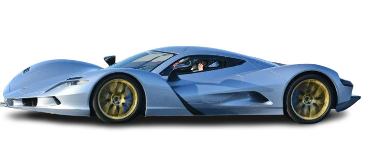
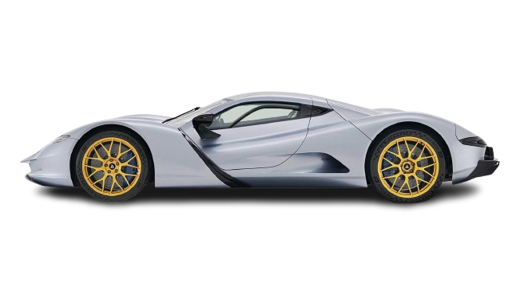

Aspark
Aspark is a Japanese automobile company that has set out to create high-performance electric hypercars. Founded with a commitment to pushing the boundaries of speed and engineering, Aspark is known for the groundbreaking Aspark Owl.
Founded: 2005, Osaka, Japan
Founder: Masanori Yoshida
Headquarters: Osaka, Japan
Aspark's Top Electric Hypercars:
Aspark Owl

The Aspark Owl is one of the world’s fastest electric cars, valued at around $3.5 million. It boasts a 0-60 mph acceleration in under 1.7 seconds and a top speed of 249 mph, thanks to its four electric motors delivering over 2000 horsepower.
Aspark Hyper GT (Concept)
A concept car designed to combine electric performance with luxury, offering sleek design and innovative technology, expected to continue Aspark’s legacy in the electric hypercar space.
Aspark Mini Owl (Concept)
An upcoming concept, the Mini Owl aims to provide a compact, high-performance electric experience. It is designed to retain the Aspark ethos in a more accessible form factor, featuring advanced battery technology and efficient aerodynamics.